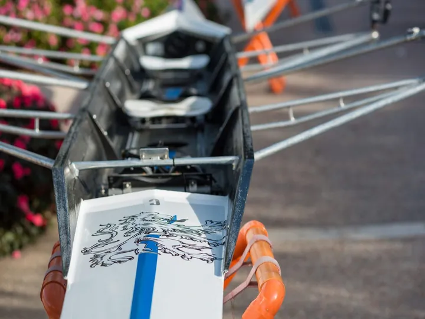

sab 17 ott
Ettagonale Internazionale di Canottaggio
Il canottaggio è uno sport di resistenza e di velocità. La dote essenziale del canottiere è quella di essere in grado di tenere in equilibrio la barca, trasmettendo al tempo stesso il massimo della potenza ai remi. Vengono utilizzate delle barche dalla forma molto affusolata…
 Indicazioni
Indicazioni
- Costi e prenotazioni
- Costo non indicato · Prenotazione non indicata
- Programma
- Programma da verificare. Apri la fonte ufficiale per orari e possibili aggiornamenti.
- In caso di maltempo
- Nessuna indicazione specifica pubblicata.
- Note
- Acquisito automaticamente dalla fonte.
L’EVENTO
Descrizione completa
Il canottaggio è uno sport di resistenza e di velocità. La dote essenziale del canottiere è quella di essere in grado di tenere in equilibrio la barca, trasmettendo al tempo stesso il massimo della potenza ai remi. Vengono utilizzate delle barche dalla forma molto affusolata, nelle quali gli atleti siedono su seggiolini, scorrevoli o fissi, chiamati “carrelli”, orientati verso poppa. Per far muovere l’imbarcazione vengono usati dei remi.
Le principali differenze nelle imbarcazioni usate per il canottaggio sono date dal numero di atleti che compongono l’equipaggio, dal numero di remi azionati da ogni canottiere, che possono essere uno (“di punta”) o due (“di coppia”) e dalla presenza o meno di un timoniere (si parla quindi di “con” o “senza”). Le imbarcazioni, in origine venivano costruite in legno; oggi sono fabbricate in fibra di carbonio, mentre le imbarcazioni da competizione sono ormai quasi tutte in materiali compositi.
Il canottaggio è uno sport atipico per quanto riguarda lo sforzo richiesto agli atleti: la distanza di gara standard di 2.000 metri è abbastanza lunga da richiedere doti di resistenza, ma abbastanza corta in termini di tempo da sembrare una gara di velocità.
I vogatori possiedono una potenza tra le più alte di tutti gli sport. Il vogatore quindi deve adattare la respirazione al ritmo della remata, inalando ed esalando due volte per remata, contrariamente ad altri sport, come ad esempio il ciclismo, dove l’atleta può respirare liberamente.
Sabato 17 ottobre Bardolino sarà teatro dell ’Ettagonale Internazionale Giovanile di Canottaggio !
Sette rappresentative, quattro nazioni e tanti giovani atleti pronti a sfidarsi sulle acque del Lago di Garda.Veneto, Friuli Venezia Giulia, Carinzia, Alta Austria, Vienna, Slovenia e Istria Croata saranno protagoniste di una giornata di sport, amicizia e competizione internazionale.
IL PROGRAMMA
Programma e orari
Appuntamenti raccolti dalle fonti elencate. Dove manca un orario, non è ancora disponibile in questa scheda.
Programma pubblicato
- 2026-10-17 — 2026-10-17 · 14:00:00
INFORMAZIONI UTILI
Prima di partire
- Controllare la fonte prima di partire.
ORGANIZZAZIONE